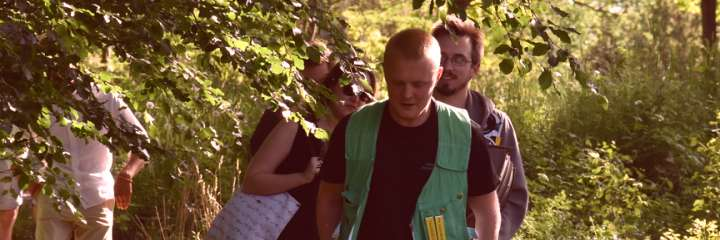
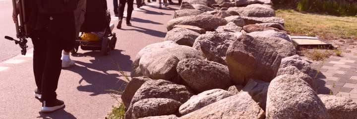

GrillCon 2017 Höst - Hackathon och seminarier
Det är dags för höstens GrillCon som går av stapeln mellan torsdagen den 14:e september till lördagen den 16:e september 2017.
Nytt för hösten är vår egen variant av Hackathon som pågår mellan torsdagen och fredags lunch.
Vi får fina besök av Prisjakt och Tomten som håller föredrag på fredagseftermiddagen, en fin start på grillkvällen som startar klockan 17 då grillen tänds.
Det ryktas att Foto- och Fritidsklubben planerar för en lördagsutflykt även denna gång.
#Övergripande schema och aktiviteter
Det övergripande schemat ser ut så här.
| Dag | Tid | Vad händer? |
|---|---|---|
| Torsdag 14/9 | 09-10 | Samling inför Hackathon |
| 10-20 | Hackathon | |
| Fredag 15/9 | 09-10 | Hackathon frukost |
| 10-12 | Hackathon (avslut) | |
| 13-15 | Prisjakt seminarier med frågestund | |
| 15-16 | Tomten seminarie om webbsäkerhet | |
| 17- | Traditionell Grill | |
| Lördag 16/9 | 09-14 | Utflykt i Foto- och Fritidsklubbens regi |
Läs vidare för mer information.
#Hackathon
Tänk om alla krav och måsten försvann och du kunde ägna dig åt att programmera ditt eget hobby-projekt tillsammans med andra likasinnade under en och en halv dag? Låter det lockande?
Vi sitter i labbsalen och delar in oss i grupper efter intresseområden som vi själva bestämmer. Sedan gör vi en plan för kod som vi vill hinna med och sen kör vi och hjälps åt att komma i mål. Vi ägnar dagen åt kodning och kodverktyg.
Troligen blir det en del öppen källkod men alla variationer är välkomna.
För min egen del så funderar jag om det blir ramverket Anax som får en insats, eller blir det en start av programvara för ett diskussionsforum, eller satsar jag allt på att utveckla mitt Asteroids i JavaScript? Svåra val som ni alla förstår.
Hackathon i vår mening är att samlas och dedikera tiden till kodning. Vilken härlig frihetskänsla, inga måsten, bara kodande.
Vill du delta i hackathonet men hacka på dina skoluppgifter och kmom så går det strålande bra.
Årets sponsor till Hackathonet är Lars Ollén, aka Laeffe, som bidrar med kolsyrat vatten, färsk och torkad frukt samt osaltade/osötade nötter. Allt för att hålla produktiviteten på en hälsosamt hög nivå. Laeffe är alumni BTH student från Civ PT, aktiv i studentföreningen SIS och numer företagare på konsultföretaget Projektkoll Sverige AB. Lars tänker även delta i Hackathonet så vi ser honom där.
#Prisjakt kommer på besök

Maria
Maria Hall, CTO (Chief Technology Officer), teknikchef på ren svenska, kommer med några av sina pålitliga medarbetare och gästar oss under fredagseftermiddagen och korvgrillningen.
Maria har utlovat seminarier om React och Redux samt om deras projekt inom Machine Learning.
Tanken är att vi avslutar sessionen med en frågestund/panel där vi kan ställa frågor till gänget från Prisjakt för att höra vilka krav som ställs på webbprogrammerare utanför skolvärlden.
Vad kan jag säga, vilket erbjudande!
#Prisjakt-Mattias: React och Redux

Mattias
Först ut är Mattias Lyckne med en presentation i det heta området React och Redux.
Mattias gick ut Web, Internet och Programvaruteknik vid BTH 2013 (numer heter programmet Webbprogrammering). Efter det gick flytlasset till Skellefteå för att jobba på en liten byrå med webb- och iOS-utveckling. 2015 blev det Prisjakt där han nu jobbar som utvecklare med både backend och frontend.
Mattias kommer tillbaka till BTH för att prata främst om React och Redux men även lite andra verktyg som kan tänkas behövas. Grunderna presenteras och sen studeras en liten applikation som bryts ned till mindre delar och görs små förbättringar i. Mattias går igenom allt från hur en React-komponent ser ut och vad Redux hjälper oss med till hur vi testar vår kod. Förhoppningsvis går vi alla därifrån sugna på att börja bygga saker i React.
#Prisjakt-Emanuel & Henrik: Machine Learning
Emanuel och Henrik håller presentationen om Machine Learning och delar med sig om erfarenheter från ett nystartat Prisjakt-projekt.

Emanuel

Henrik
Henrik gick tre år på Fysikerprogrammet på Uppsala universitet men pausade studierna för att arbeta som mjukvaruutvecklare. Tio år senare återvände han till fysiken och disputerade i elementarpartikelfysik vid ATLAS-experimentet på CERN och Uppsala universitet 2016. Hans intresse för machine learning väcktes genom forskningen, där tekniken används för att urskilja små signaler bland en stor mängd bakgrund.
Nu på Prisjakt har Emanuel och Henrik tillsammans fått möjligheten att starta upp en helt ny machine learning-grupp som än så länge har fokuserat på textanalys i samband med sortering av Prisjakts alla inkommande produkter vilket kommer att vara en stor del av ämnet för presentationen.
#Tomten: Webbsäkerhet - en kraschkurs

Thomas
Vi får ytterligare finbesök då Thomas Marcks Von Würtemberg, aka tomten, kommer och gästar oss och håller ett seminarie om hans specialitet inom säkerhet.
Thomas gick ut programmet IT-säkerhet 2009 och har sedan dess jobbat med säkerhetsfrågor, både professionellt och som sitt fritidsintresse. Thomas har tagit ledigt från sitt jobb som säkerhetskonsult på NCC Group i Leatherhead, England och kommer hit till oss för att grilla korv och hålla ett seminarie med titeln “Webbsäkerhet - En krashkurs”.
Vilka skrämmande saker kan han tänkas berätta för oss?
För övrigt är Thomas en stabil dbwebb-innebandyspelare som sponsrat innebandy-gänget med en sjukvårdslåda, det tackar vi för. Thomas är också admin på irc-servern sedan många år tillbaka i tiden. Bra saker att ha i ett CV.
#Klassisk Grill


Grill med grillspett och annat.
Traditionell grill med förrätt, varmrätt, efterrätt och snacks.
Förhoppningsvis har någon hackat och preppat inför grillspetten. Har vi ännu mer tur har någon handlat och det finns en grill som vi kan låna och någon som bär den till grillplatsen.
Under kvällen sker bland annat följande:
- Riktigt svår tipspromenad.
- Statusuppdatering för WM i Arkadbyggeri 2018.
- Startskott för WM i Uptime 2017/2018.
#Utflykt med Foto- och Fritidsklubben


Vårutflykten gick till Aspö.
Utflykten pågår ungefär mellan 09-14. Plats för starten meddelas senare tillsammans med fler detaljer om dagen.
Utflykten arrangeras av dbwebb’s Foto- och Fritidsklubb. Det blir ett hemligt resmål som innebär enklare vandring/promenad bland sevärdheter och natur. En halvdagsutflykt i (hav), skog och mark i all enkelhet. Ta med egen matsäck, kläder för väder och en kamera om andan faller på.
Ta gärna med en kompis.
I våras gick utflykten till Aspö.
#Revision history
- 1504051200: (B, mos) Laeffe sponsor Hackathon.
- 1503964800: (A, mos) Inför GrillCon 2017 höst.